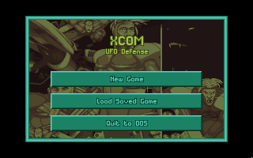
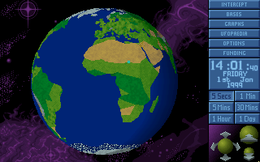

名稱：幽浮1：地球防衛武力／未知敵人 (X-COM: UFO Defense／UFO: Enemy Unknown，英文版)
簡介：Mythos 1994年出品的即時戰略與回合制戰術遊戲，由MicroProse代理發行，台灣則由
第三波代理進口，但並未中文化 [待補]。


備註：本版為1.4光碟版（內含Win黃金版）
保護：光碟版（1.4版）無保護，磁片版為數字密碼，破解碼：
GEOSCAPE.EXE
74 0D 83 F9 08 75 08 31 C0 (1.2版)
90 90 -- -- -- 90 90 -- --
24 24 83 FE
-- -- EB 07
74 1C BB 01
EB -- -- --
檔案：xcom14.rar = 1.4更新檔（已去除保護）
ufo14-disk.rar = 1.4磁片版（內含1.0、1.2版）